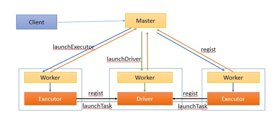

Spark core
推荐系统学习笔记目录
spark 入门
spark概述
1、什么是spark
- 基于内存的计算引擎，它的计算速度非常快。但是仅仅只涉及到数据的计算，并没有涉及到数据的存储。
2、为什么要学习spark
MapReduce框架局限性- Map结果写磁盘，Reduce写HDFS，多个MR之间通过HDFS交换数据
- 任务调度和启动开销大
- 无法充分利用内存
- 不适合迭代计算（如机器学习、图计算等等），交互式处理（数据挖掘）
- 不适合流式处理（点击日志分析）
- MapReduce编程不够灵活，仅支持Map和Reduce两种操作
Hadoop生态圈
- 批处理：MapReduce、Hive、Pig
- 流式计算：Storm
- 交互式计算：Impala、presto
需要一种灵活的框架可同时进行批处理、流式计算、交互式计算
- 内存计算引擎，提供cache机制来支持需要反复迭代计算或者多次数据共享，减少数据读取的IO开销
- DAG引擎，较少多次计算之间中间结果写到HDFS的开销
- 使用多线程模型来减少task启动开销，shuffle过程中避免不必要的sort操作以及减少磁盘IO
spark的缺点是：吃内存，不太稳定
3、spark特点
- 1、速度快（比mapreduce在内存中快100倍，在磁盘中快10倍）
- spark中的job中间结果可以不落地，可以存放在内存中。
- mapreduce中map和reduce任务都是以进程的方式运行着，而spark中的job是以线程方式运行在进程中。
- 2、易用性（可以通过java/scala/python/R开发spark应用程序）
- 3、通用性（可以使用spark sql/spark streaming/mlib/Graphx）
- 4、兼容性（spark程序可以运行在standalone/yarn/mesos）
- 1、速度快（比mapreduce在内存中快100倍，在磁盘中快10倍）
spark启动（local模式）和WordCount(演示)
启动pyspark
在$SPARK_HOME/sbin目录下执行
- ./pyspark
1
2
3
4
5sc = spark.sparkContext
words = sc.textFile('file:///home/hadoop/tmp/word.txt') \
.flatMap(lambda line: line.split(" ")) \
.map(lambda x: (x, 1)) \
.reduceByKey(lambda a, b: a + b).collect()- ./pyspark
输出结果：
1
[('python', 2), ('hadoop', 1), ('bc', 1), ('foo', 4), ('test', 2), ('bar', 2), ('quux', 2), ('abc', 2), ('ab', 1), ('you', 1), ('ac', 1), ('bec', 1), ('by', 1), ('see', 1), ('labs', 2), ('me', 1), ('welcome', 1)]
spark-core概述
什么是RDD
- RDD（Resilient Distributed Dataset）叫做弹性分布式数据集，是Spark中最基本的数据抽象，它代表一个不可变、可分区、里面的元素可并行计算的集合.
- Dataset:一个数据集，简单的理解为集合，用于存放数据的
- Distributed：它的数据是分布式存储，并且可以做分布式的计算
- Resilient：弹性的
- 它表示的是数据可以保存在磁盘，也可以保存在内存中
- 数据分布式也是弹性的
- 弹性:并不是指他可以动态扩展，而是容错机制。
- RDD会在多个节点上存储，就和hdfs的分布式道理是一样的。hdfs文件被切分为多个block存储在各个节点上，而RDD是被切分为多个partition。不同的partition可能在不同的节点上
- spark读取hdfs的场景下，spark把hdfs的block读到内存就会抽象为spark的partition。
- spark计算结束，一般会把数据做持久化到hive，hbase，hdfs等等。我们就拿hdfs举例，将RDD持久化到hdfs上，RDD的每个partition就会存成一个文件，如果文件小于128M，就可以理解为一个partition对应hdfs的一个block。反之，如果大于128M，就会被且分为多个block，这样，一个partition就会对应多个block。
- 不可变
- 可分区
- 并行计算
RDD的创建
第一步 创建sparkContext
- SparkContext, Spark程序的入口. SparkContext代表了和Spark集群的链接, 在Spark集群中通过SparkContext来创建RDD
- SparkConf 创建SparkContext的时候需要一个SparkConf， 用来传递Spark应用的基本信息
1
2conf = SparkConf().setAppName(appName).setMaster(master)
sc = SparkContext(conf=conf)创建RDD
- 进入pyspark环境
1
2
3
4
5
6
7
8
9
10
11
12
13
14
15
16
17
18[hadoop@hadoop000 ~]$ pyspark
Python 3.5.0 (default, Nov 13 2018, 15:43:53)
[GCC 4.8.5 20150623 (Red Hat 4.8.5-28)] on linux
Type "help", "copyright", "credits" or "license" for more information.
19/03/08 12:19:55 WARN util.NativeCodeLoader: Unable to load native-hadoop library for your platform... using builtin-java classes where applicable
Setting default log level to "WARN".
To adjust logging level use sc.setLogLevel(newLevel). For SparkR, use setLogLevel(newLevel).
Welcome to
____ __
/ __/__ ___ _____/ /__
_\ \/ _ \/ _ `/ __/ '_/
/__ / .__/\_,_/_/ /_/\_\ version 2.3.0
/_/
Using Python version 3.5.0 (default, Nov 13 2018 15:43:53)
SparkSession available as 'spark'.
>> sc
<SparkContext master=local[*] appName=PySparkShell>- 在spark shell中 已经为我们创建好了 SparkContext 通过sc直接使用
- 可以在spark UI中看到当前的Spark作业 在浏览器访问当前centos的4040端口
Parallelized Collections方式创建RDD
- 调用
SparkContext的parallelize方法并且传入已有的可迭代对象或者集合
1
2data = [1, 2, 3, 4, 5]
distData = sc.parallelize(data)1
2
3
4
5
6>> data = [1, 2, 3, 4, 5]
>> distData = sc.parallelize(data)
>> data
[1, 2, 3, 4, 5]
>> distData
ParallelCollectionRDD[0] at parallelize at PythonRDD.scala:175- 在spark ui中观察执行情况
- 在通过
parallelize方法创建RDD 的时候可以指定分区数量
1
2
3>> distData = sc.parallelize(data,5)
>> distData.reduce(lambda a, b: a + b)
15- 在spark ui中观察执行情况
- Spark将为群集的每个分区（partition）运行一个任务（task）。 通常，可以根据CPU核心数量指定分区数量（每个CPU有2-4个分区）如未指定分区数量，Spark会自动设置分区数。
- 调用
通过外部数据创建RDD
- PySpark可以从Hadoop支持的任何存储源创建RDD，包括本地文件系统，HDFS，Cassandra，HBase，Amazon S3等
- 支持整个目录、多文件、通配符
- 支持压缩文件
1
2
3>> rdd1 = sc.textFile('file:///home/hadoop/tmp/word.txt')
>> rdd1.collect()
['foo foo quux labs foo bar quux abc bar see you by test welcome test', 'abc labs foo me python hadoop ab ac bc bec python']
spark-core RDD常用算子练习
RDD 常用操作
RDD 支持两种类型的操作：
- transformation
- 从一个已经存在的数据集创建一个新的数据集
- rdd a —–>transformation —-> rdd b
- 比如， map就是一个transformation 操作，把数据集中的每一个元素传给一个函数并返回一个新的RDD，代表transformation操作的结果
- 从一个已经存在的数据集创建一个新的数据集
- action
- 获取对数据进行运算操作之后的结果
- 比如， reduce 就是一个action操作，使用某个函数聚合RDD所有元素的操作，并返回最终计算结果
- transformation
所有的transformation操作都是惰性的（lazy）
- 不会立即计算结果
- 只记下应用于数据集的transformation操作
- 只有调用action一类的操作之后才会计算所有transformation
- 这种设计使Spark运行效率更高
- 例如map reduce 操作，map创建的数据集将用于reduce，map阶段的结果不会返回，仅会返回reduce结果。
persist 操作
- persist操作用于将数据缓存 可以缓存在内存中 也可以缓存到磁盘上， 也可以复制到磁盘的其它节点上
RDD Transformation算子
map: map(func)
- 将func函数作用到数据集的每一个元素上，生成一个新的RDD返回
1
2
3
4>> rdd1 = sc.parallelize([1,2,3,4,5,6,7,8,9],3)
>> rdd2 = rdd1.map(lambda x: x+1)
>> rdd2.collect()
[2, 3, 4, 5, 6, 7, 8, 9, 10]1
2
3
4
5
6
7>> rdd1 = sc.parallelize([1,2,3,4,5,6,7,8,9],3)
>> def add(x):
... return x+1
...
>> rdd2 = rdd1.map(add)
>> rdd2.collect()
[2, 3, 4, 5, 6, 7, 8, 9, 10]filter
- filter(func) 选出所有func返回值为true的元素，生成一个新的RDD返回
1
2
3
4
5>> rdd1 = sc.parallelize([1,2,3,4,5,6,7,8,9],3)
>> rdd2 = rdd1.map(lambda x:x*2)
>> rdd3 = rdd2.filter(lambda x:x>4)
>> rdd3.collect()
[6, 8, 10, 12, 14, 16, 18]flatmap
- flatMap会先执行map的操作，再将所有对象合并为一个对象
1
2
3
4>> rdd1 = sc.parallelize(["a b c","d e f","h i j"])
>> rdd2 = rdd1.flatMap(lambda x:x.split(" "))
>> rdd2.collect()
['a', 'b', 'c', 'd', 'e', 'f', 'h', 'i', 'j']- flatMap和map的区别：flatMap在map的基础上将结果合并到一个list中
1
2
3
4>> rdd1 = sc.parallelize(["a b c","d e f","h i j"])
>> rdd2 = rdd1.map(lambda x:x.split(" "))
>> rdd2.collect()
[['a', 'b', 'c'], ['d', 'e', 'f'], ['h', 'i', 'j']]union
- 对两个RDD求并集
1
2
3
4
5>> rdd1 = sc.parallelize([("a",1),("b",2)])
>> rdd2 = sc.parallelize([("c",1),("b",3)])
>> rdd3 = rdd1.union(rdd2)
>> rdd3.collect()
[('a', 1), ('b', 2), ('c', 1), ('b', 3)]intersection
- 对两个RDD求交集
1
2
3
4
5
6rdd1 = sc.parallelize([("a",1),("b",2)])
rdd2 = sc.parallelize([("c",1),("b",3)])
rdd3 = rdd1.union(rdd2)
rdd4 = rdd3.intersection(rdd2)
rdd4.collect()
[('c', 1), ('b', 3)]groupByKey
- 以元组中的第0个元素作为key，进行分组，返回一个新的RDD
1
2
3
4
5
6
7>> rdd1 = sc.parallelize([("a",1),("b",2)])
>> rdd2 = sc.parallelize([("c",1),("b",3)])
>> rdd3 = rdd1.union(rdd2)
>> rdd4 = rdd3.groupByKey()
>> rdd4.collect()
[('a', <pyspark.resultiterable.ResultIterable object at 0x7fba6a5e5898>), ('c', <pyspark.resultiterable.ResultIterable object at 0x7fba6a5e5518>), ('b', <pyspark.resultiterable.ResultIterable object at 0x7fba6a5e5f28>)]- groupByKey之后的结果中 value是一个Iterable
1
2
3
4
5
6result[2]
('b', <pyspark.resultiterable.ResultIterable object at 0x7fba6c18e518>)
result[2][1]
<pyspark.resultiterable.ResultIterable object at 0x7fba6c18e518>
list(result[2][1])
[2, 3]reduceByKey
- 将key相同的键值对，按照Function进行计算
1
2
3rdd = sc.parallelize([("a", 1), ("b", 1), ("a", 1)])
rdd.reduceByKey(lambda x,y:x+y).collect()
[('b', 1), ('a', 2)]sortByKey
sortByKey(ascending=True, numPartitions=None, keyfunc=<function RDD.> )Sorts this RDD, which is assumed to consist of (key, value) pairs.
1
2
3
4
5
6
7
8
9
10
11tmp = [('a', 1), ('b', 2), ('1', 3), ('d', 4), ('2', 5)]
sc.parallelize(tmp).sortByKey().first()
('1', 3)
sc.parallelize(tmp).sortByKey(True, 1).collect()
[('1', 3), ('2', 5), ('a', 1), ('b', 2), ('d', 4)]
sc.parallelize(tmp).sortByKey(True, 2).collect()
[('1', 3), ('2', 5), ('a', 1), ('b', 2), ('d', 4)]
tmp2 = [('Mary', 1), ('had', 2), ('a', 3), ('little', 4), ('lamb', 5)]
tmp2.extend([('whose', 6), ('fleece', 7), ('was', 8), ('white', 9)])
sc.parallelize(tmp2).sortByKey(True, 3, keyfunc=lambda k: k.lower()).collect()
[('a', 3), ('fleece', 7), ('had', 2), ('lamb', 5),...('white', 9), ('whose', 6)]
RDD Action算子
collect
- 返回一个list，list中包含 RDD中的所有元素
- 只有当数据量较小的时候使用Collect 因为所有的结果都会加载到内存中
reduce
- reduce将RDD中元素两两传递给输入函数，同时产生一个新的值，新产生的值与RDD中下一个元素再被传递给输入函数直到最后只有一个值为止。
1
2
3>> rdd1 = sc.parallelize([1,2,3,4,5])
>> rdd1.reduce(lambda x,y : x+y)
15first
- 返回RDD的第一个元素
1
2sc.parallelize([2, 3, 4]).first()
2take
- 返回RDD的前N个元素
take(num)
1
2
3
4
5
6>> sc.parallelize([2, 3, 4, 5, 6]).take(2)
[2, 3]
>> sc.parallelize([2, 3, 4, 5, 6]).take(10)
[2, 3, 4, 5, 6]
>> sc.parallelize(range(100), 100).filter(lambda x: x > 90).take(3)
[91, 92, 93]count
返回RDD中元素的个数
1
2>>> sc.parallelize([2, 3, 4]).count()
3
Spark RDD两类算子执行示意
spark-core 实战案例
Pycharm编写spark代码环境配置
准备pycharm环境
- 对接到centos服务器，下载环境
- 1.1 选择Tools –>Deployment–>Configuration
注：选择Type为SFTP，写入主机名，登陆的用户名和密码
注：选择Deployment目录为基准的根目录 - 1.2 选择File–>settings–>Project xxx–>Project Interpreter
注：输入远程连接的主机名，登陆的用户名和密码，进行远程python环境的对接。
利用PyCharm编写spark wordcount程序
环境配置
将spark目录下的python目录下的pyspark整体拷贝到pycharm使用的python环境下
将pyspark拷贝到pycharm使用的：xxx\Python\Python36\Lib\site-packages目录下代码
1
2
3
4
5
6
7
8
9
10
11
12
13
14
15
16
17
18
19
20
21
22
23import sys
from pyspark.sql import SparkSession
if __name__ == '__main__':
if len(sys.argv) != 2:
print("Usage: avg <input>", file=sys.stderr)
sys.exit(-1)
spark = SparkSession.builder.appName("test").getOrCreate()
sc = spark.sparkContext
counts = sc.textFile(sys.argv[1]) \
.flatMap(lambda line: line.split(" ")) \
.map(lambda x: (x, 1)) \
.reduceByKey(lambda a, b: a + b)
output = counts.collect()
for (word, count) in output:
print("%s: %i" % (word, count))
sc.stop()将代码上传到远程cent-os系统上
在系统上执行指令
spark-submit --master local wc.py file:///root/bigdata/data/spark_test.log
通过spark实现点击流日志分析
在新闻类网站中，经常要衡量一条网络新闻的页面访问量，最常见的就是uv和pv，如果在所有新闻中找到访问最多的前几条新闻，topN是最常见的指标。
数据示例
1
2
3
4
5
6
7
8
9
10每条数据代表一次访问记录 包含了ip 访问时间 访问的请求方式 访问的地址...信息
194.237.142.21 - - [18/Sep/2013:06:49:18 +0000] "GET /wp-content/uploads/2013/07/rstudio-git3.png HTTP/1.1" 304 0 "-" "Mozilla/4.0 (compatible;)"
183.49.46.228 - - [18/Sep/2013:06:49:23 +0000] "-" 400 0 "-" "-"
163.177.71.12 - - [18/Sep/2013:06:49:33 +0000] "HEAD / HTTP/1.1" 200 20 "-" "DNSPod-Monitor/1.0"
163.177.71.12 - - [18/Sep/2013:06:49:36 +0000] "HEAD / HTTP/1.1" 200 20 "-" "DNSPod-Monitor/1.0"
101.226.68.137 - - [18/Sep/2013:06:49:42 +0000] "HEAD / HTTP/1.1" 200 20 "-" "DNSPod-Monitor/1.0"
101.226.68.137 - - [18/Sep/2013:06:49:45 +0000] "HEAD / HTTP/1.1" 200 20 "-" "DNSPod-Monitor/1.0"
60.208.6.156 - - [18/Sep/2013:06:49:48 +0000] "GET /wp-content/uploads/2013/07/rcassandra.png HTTP/1.0" 200 185524 "http://cos.name/category/software/packages/" "Mozilla/5.0 (Windows NT 6.1) AppleWebKit/537.36 (KHTML, like Gecko) Chrome/29.0.1547.66 Safari/537.36"
222.68.172.190 - - [18/Sep/2013:06:49:57 +0000] "GET /images/my.jpg HTTP/1.1" 200 19939 "http://www.angularjs.cn/A00n" "Mozilla/5.0 (Windows NT 6.1) AppleWebKit/537.36 (KHTML, like Gecko) Chrome/29.0.1547.66 Safari/537.36"
222.68.172.190 - - [18/Sep/2013:06:50:08 +0000] "-" 400 0 "-" "-"访问的pv
pv：网站的总访问量
1
2
3
4
5
6
7
8
9from pyspark.sql import SparkSession
spark = SparkSession.builder.appName("pv").getOrCreate()
sc = spark.sparkContext
rdd1 = sc.textFile("file:///root/bigdata/data/access.log")
#把每一行数据记为("pv",1)
rdd2 = rdd1.map(lambda x:("pv",1)).reduceByKey(lambda a,b:a+b)
rdd2.collect()
sc.stop()访问的uv
uv：网站的独立用户访问量
1
2
3
4
5
6
7
8
9
10
11
12from pyspark.sql import SparkSession
spark = SparkSession.builder.appName("pv").getOrCreate()
sc = spark.sparkContext
rdd1 = sc.textFile("file:///root/bigdata/data/access.log")
#对每一行按照空格拆分，将ip地址取出
rdd2 = rdd1.map(lambda x:x.split(" ")).map(lambda x:x[0])
#把每个ur记为1
rdd3 = rdd2.distinct().map(lambda x:("uv",1))
rdd4 = rdd3.reduceByKey(lambda a,b:a+b)
rdd4.saveAsTextFile("hdfs:///uv/result")
sc.stop()访问的topN
1
2
3
4
5
6
7
8
9
10
11
12
13from pyspark.sql import SparkSession
spark = SparkSession.builder.appName("topN").getOrCreate()
sc = spark.sparkContext
rdd1 = sc.textFile("file:///root/bigdata/data/access.log")
#对每一行按照空格拆分，将url数据取出，把每个url记为1
rdd2 = rdd1.map(lambda x:x.split(" ")).filter(lambda x:len(x)>10).map(lambda x:(x[10],1))
#对数据进行累加，按照url出现次数的降序排列
rdd3 = rdd2.reduceByKey(lambda a,b:a+b).sortBy(lambda x:x[1],ascending=False)
#取出序列数据中的前n个
rdd4 = rdd3.take(5)
rdd4.collect()
sc.stop()
spark-core实战
通过spark实现ip地址查询
需求
在互联网中，我们经常会见到城市热点图这样的报表数据，例如在百度统计中，会统计今年的热门旅游城市、热门报考学校等，会将这样的信息显示在热点图中。
因此，我们需要通过日志信息（运行商或者网站自己生成）和城市ip段信息来判断用户的ip段，统计热点经纬度。
ip日志信息
在ip日志信息中，我们只需要关心ip这一个维度就可以了，其他的不做介绍
思路
1、 加载城市ip段信息，获取ip起始数字和结束数字，经度，纬度
2、 加载日志数据，获取ip信息，然后转换为数字，和ip段比较
3、 比较的时候采用二分法查找，找到对应的经度和纬度
4，对相同的经度和纬度做累计求和
启动Spark集群
进入到$SPARK_HOME/sbin目录
- 启动Master
1
./start-master.sh -h 192.168.199.188
- 启动Slave
1
./start-slave.sh spark://192.168.199.188:7077
- jps查看进程
1
227073 Master
27151 Worker - 关闭防火墙
1
systemctl stop firewalld
- 通过SPARK WEB UI查看Spark集群及Spark
- http://192.168.199.188:8080/ 监控Spark集群
- http://192.168.199.188:4040/ 监控Spark Job
- 启动Master
代码
1
2
3
4
5
6
7
8
9
10
11
12
13
14
15
16
17
18
19
20
21
22
23
24
25
26
27
28
29
30
31
32
33
34
35
36
37
38
39
40
41
42
43
44
45
46
47
48
49
50
51
52
53
54
55
56from pyspark.sql import SparkSession
# 255.255.255.255 0~255 256 2^8 8位2进制数
#将ip转换为特殊的数字形式 223.243.0.0|223.243.191.255| 255 2^8
#11011111
#00000000
#1101111100000000
# 11110011
#11011111111100110000000000000000
def ip_transform(ip):
ips = ip.split(".")#[223,243,0,0] 32位二进制数
ip_num = 0
for i in ips:
ip_num = int(i) | ip_num << 8
return ip_num
#二分法查找ip对应的行的索引
def binary_search(ip_num, broadcast_value):
start = 0
end = len(broadcast_value) - 1
while (start <= end):
mid = int((start + end) / 2)
if ip_num >= int(broadcast_value[mid][0]) and ip_num <= int(broadcast_value[mid][1]):
return mid
if ip_num < int(broadcast_value[mid][0]):
end = mid
if ip_num > int(broadcast_value[mid][1]):
start = mid
def main():
spark = SparkSession.builder.appName("test").getOrCreate()
sc = spark.sparkContext
city_id_rdd = sc.textFile("file:///home/hadoop/app/tmp/data/ip.txt").map(lambda x:x.split("|")).map(lambda x: (x[2], x[3], x[13], x[14]))
#创建一个广播变量
city_broadcast = sc.broadcast(city_id_rdd.collect())
dest_data = sc.textFile("file:///home/hadoop/app/tmp/data/20090121000132.394251.http.format").map(
lambda x: x.split("|")[1])
#根据取出对应的位置信息
def get_pos(x):
city_broadcast_value = city_broadcast.value
#根据单个ip获取对应经纬度信息
def get_result(ip):
ip_num = ip_transform(ip)
index = binary_search(ip_num, city_broadcast_value)
#((纬度,精度),1)
return ((city_broadcast_value[index][2], city_broadcast_value[index][3]), 1)
x = map(tuple,[get_result(ip) for ip in x])
return x
dest_rdd = dest_data.mapPartitions(lambda x: get_pos(x)) #((纬度,精度),1)
result_rdd = dest_rdd.reduceByKey(lambda a, b: a + b)
print(result_rdd.collect())
sc.stop()
if __name__ == '__main__':
main()广播变量的使用
- 要统计Ip所对应的经纬度, 每一条数据都会去查询ip表
- 每一个task 都需要这一个ip表, 默认情况下, 所有task都会去复制ip表
- 实际上 每一个Worker上会有多个task, 数据也是只需要进行查询操作的, 所以这份数据可以共享,没必要每个task复制一份
- 可以通过广播变量, 通知当前worker上所有的task, 来共享这个数据,避免数据的多次复制,可以大大降低内存的开销
- sparkContext.broadcast(要共享的数据)
spark 相关概念补充
spark的安装部署
1、下载spark安装包
http://spark.apache.org/downloads.html高版本不存在cdh的编译版本，可以从官网下载源码版本，指定高版本hadoop进行编译
编译步骤：
- 安装java(JDK 1.7及以上)
1
2
3
4export JAVA_HOME=/xxx
export JRE_HOME=/xxx
export CLASSPATH=.:$JAVA_HOME/lib/dt.jar:$JAVA_HOME/lib/tools.jar:$JRE_HOME/lib:$CLASSPATH
export PATH=$JAVA_HOME/bin:$PATH
- 安装java(JDK 1.7及以上)
- 安装Maven， 版本为3.3.9或者以上
下载地址：https://mirrors.tuna.tsinghua.edu.cn/apache//maven/maven-3/3.3.9/binaries
配置MAVEN_HOME1
2export MAVEN_HOME=/xxx
export PATH=$MAVEN_HOME/bin:$PATH
- 安装Maven， 版本为3.3.9或者以上
- 下载spark源码
- 增加cdh的repository
解压spark的源码包，编辑pom.xml文件， 在repositories节点 加入如下配置：1
2
3<repository>
<id>cloudera</id>
<url>https://repository.cloudera.com/artifactory/cloudera-repos/</url></repository>
- 增加cdh的repository
- 编译
设置内存：
export MAVEN_OPTS=”-Xmx2g -XX:ReservedCodeCacheSize=512m”
开始编译：源码编译后，bin目录下的文件可能不存在可执行权限，需要通过chmod指令添加可执行权限1
./dev/make-distribution.sh --name 2.6.0-cdh5.7.0 --tgz -Pyarn -Phadoop-2.6 -Phive -Phive-thriftserver -Dhadoop.version=2.6.0-cdh5.7.0 -DskipTests clean package
chmod +x xxx
- 编译
2、规划spark安装目录
3、解压安装包
4、重命名安装目录
5、修改配置文件
- spark-env.sh(需要将spark-env.sh.template重命名)
- 配置java环境变量
- export JAVA_HOME=java_home_path
- 配置PYTHON环境
- export PYSPARK_PYTHON=/xx/pythonx_home/bin/pythonx
- 配置master的地址
- export SPARK_MASTER_HOST=node-teach
- 配置master的端口
- export SPARK_MASTER_PORT=7077
- 配置java环境变量
- spark-env.sh(需要将spark-env.sh.template重命名)
6、配置spark环境变量
- export SPARK_HOME=/xxx/spark2.x
- export PATH=$PATH:$SPARK_HOME/bin
spark 集群相关概念
spark集群架构(Standalone模式)
Application
用户自己写的Spark应用程序，批处理作业的集合。Application的main方法为应用程序的入口，用户通过Spark的API，定义了RDD和对RDD的操作。
Master和Worker
整个集群分为 Master 节点和 Worker 节点，相当于 Hadoop 的 Master 和 Slave 节点。
- Master：Standalone模式中主控节点，负责接收Client提交的作业，管理Worker，并命令Worker启动Driver和Executor。
- Worker：Standalone模式中slave节点上的守护进程，负责管理本节点的资源，定期向Master汇报心跳，接收Master的命令，启动Driver和Executor。
Client：客户端进程，负责提交作业到Master。
Driver： 一个Spark作业运行时包括一个Driver进程，也是作业的主进程，负责作业的解析、生成Stage并调度Task到Executor上。包括DAGScheduler，TaskScheduler。
Executor：即真正执行作业的地方，一个集群一般包含多个Executor，每个Executor接收Driver的命令Launch Task，一个Executor可以执行一到多个Task。
Spark作业相关概念
Stage：一个Spark作业一般包含一到多个Stage。
Task：一个Stage包含一到多个Task，通过多个Task实现并行运行的功能。
DAGScheduler： 实现将Spark作业分解成一到多个Stage，每个Stage根据RDD的Partition个数决定Task的个数，然后生成相应的Task set放到TaskScheduler中。
TaskScheduler：实现Task分配到Executor上执行。